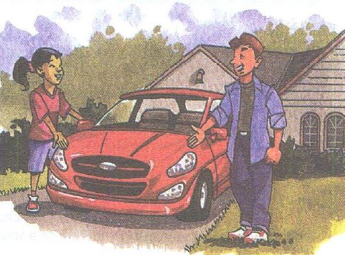

Nice Car! အရမ္းမိုက္တဲ့ကားပဲ

Ashley: Nice car, Jason. Is it yours?
ဂ်ာဆင္..အရမ္းမိုက္တဲ့ကားပဲ. ဒါနင့္ကားလား
Jason: No, It's my sister's. She has a new job, and she drives to work.
မဟုတ္ဘူး...ငါ့အစ္မဟာ။ သူမအလုပ္သစ္တစ္ခုရတယ္ေလ...သူမအလုပ္ကုိ ကားေမာင္းျပီးသြားတယ္
Ashley: Is her job here in the suburbs?
သူမအလုပ္က ဒီနားဆင္ေျခဖံုးမွာလား
Jason: No, it's downtown.
မဟုတ္ဘူး ျမိဳ႕ထဲမွာ။
Ashley: My parents work downtown, but they don't drive to work.
ငါ့မိဘေတြ ျမိဳ႕ထဲမွာ အလုပ္လုပ္တယ္...ဒါေပမဲ့ အလုပ္သို႕ ကားနဲ႕မသြားဘူး
They use public transportation.
သူတို႕က အမ်ားျပည္သူသံုး သယ္ယူပို႕ေဆာင္ေရး ေတြကိုသံုးတယ္
ဲJason: The bus or the train?
ကားလား...ရထားလား
Ashley: The train doesn't stop near our house, so they take the bus.
ရထားက ငါတို႕အိမ္နားမွာ မရပ္ဘူး..ဒါနဲ႕သူတို႕လိုင္းကားစီးတယ္။